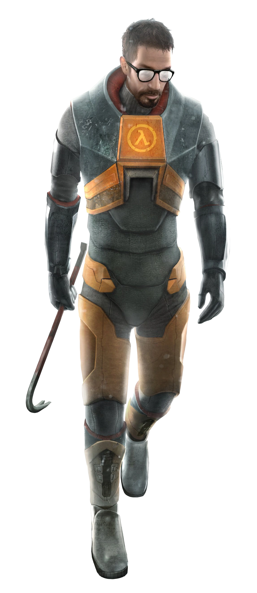
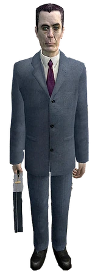
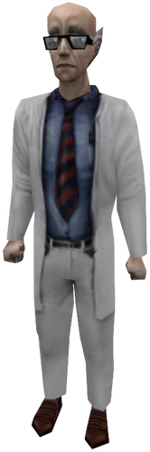
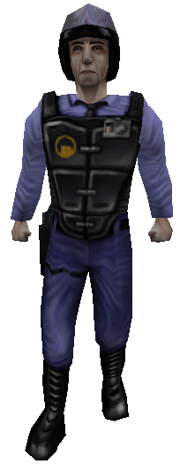
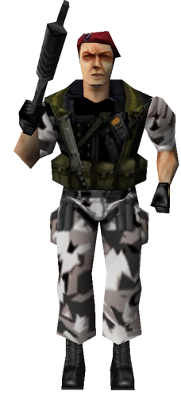
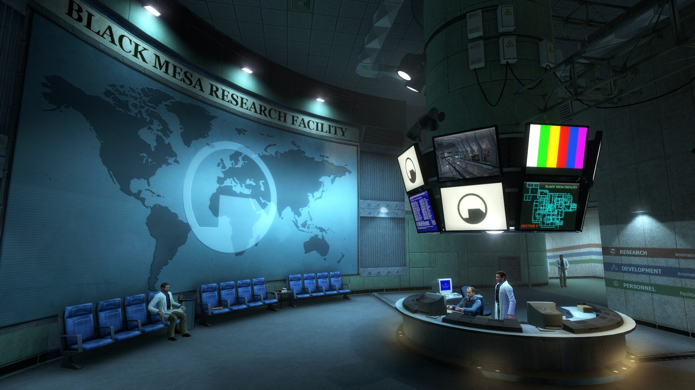
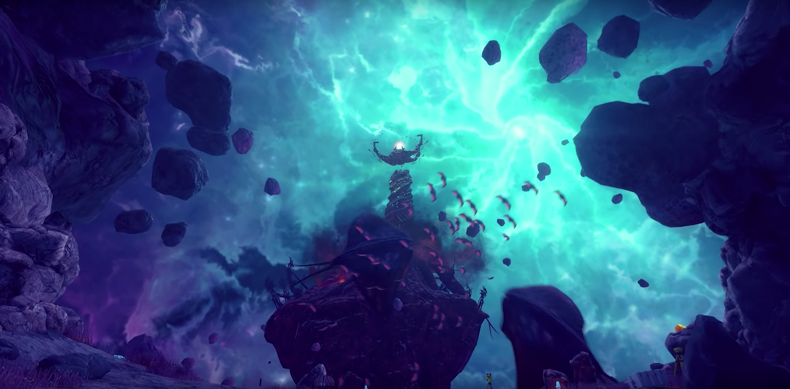

"Wake up, Mister Freeman. Wake up and... smell the ashes."
"Wake up, Mister Freeman. Wake up and... smell the ashes."
[Valve Theme plays] ahh, Half-Life...
Half-Life is truly the best game in the world, and it always will be. No matter WHO you are, you love it; everyone who touches Half-Life LOVES it. It's one of the very few things that are like that.
If only there was a GitHub-hosted webpage designed for Half-Life fans to glaze Half-Life...
Oh wait!
There is! And it's here! This is that webpage! Welcome... to the Half-Life Fan Site!
Gordon Freeman is Half-Life's protagonist. Silent but deadly, Freeman became one of the most influencial video game characters of all time. He carries a crowbar as he navigates Black Mesa (the research facility he works at) and fights aliens that invaded Earth after the resonance cascade Freeman may or may not have caused. And he never says a word... which seems very hard to do considering he's a very important person, and everyone treats him with respect because he is supposed to be the savior of the world.
So Half-Life already has a protagonist and many threats to fight him, but what about an ANtagonist? That's where the G-Man comes in. The G-Man is the head of it all; the Keeper of the Universe, if you will. The reason Freeman is able to do what he does. The G-Man seems to be behind everything. He seems all-knowing. He seems... strange... and he seems like he's behind everything that happens in the game. He's an NPC, and he appears in some cut scenes, but he's not like the others; you can find him in random spots in the world, but not for long, as he always seems to dissapear in inhuman ways every time. He is truly a wonder.
Dr. Freeman isn't the only scientist at Black Mesa (shocker). There are, in fact, MANY scientists, most of which actually have names! Such as:
Of course, those aren't the only names. There is actually a wider spectrum of them, but I forget most of them.
The scientists don't do much, they mostly just walk around and study the computers in the corridors (two of them, however, hosted the Test in the test chamber that started the resonance cascade). After the aliens invade earth, the scientists are helpless, so if Freeman decides to help them survive, that will be their only hope. They can also heal you. Even if you're Adrian Shephard!
Of course, in a big labratory like Black Mesa, you'll need some sort of rule enforcement and order. That's where the security officers come in. Unlike the scientists, these guys actually carry pistols on them! And can fight back against the aliens! Unfortunately, they are not equipped with H.E.V suits like Freeman, so they take a lot less to defeat. They die often. Sad. ALSO unlike the scientists, you can actually PLAY AS these officers in the Blue Shift spinoff game!
After the resonance cascade, the military was asked to come to Black Mesa to take out the aliens. Little does the science team know, the military was asked to wipe out ALL of Black Mesa... INCLUDING THE SCIENTISTS! So now, Freeman has to fight aliens AND the military! Honestly, Half-Life could still be a great game without the mikitary being a factor, but I do love Opposing Force (the spinoff where you play as Adrian Shephard, who's part of the military operation).
Ahh, Black Mesa. The best research facility in all of the United States. Here, the most intellegent scientists examine "crunchy crystals" for their most recent experiment...
What could go wrong?
Xen is the home of all the aliens that invade Earth. In the original game, there's not a whole lot to actually DO in Xen but defeat the final boss of the game: the mother of all aliens. Buuuuuuuuut in Black Mesa (the Half-Life: Source remake made by Crowbar Collective), Xen gets probably the biggest glow-up in history.
